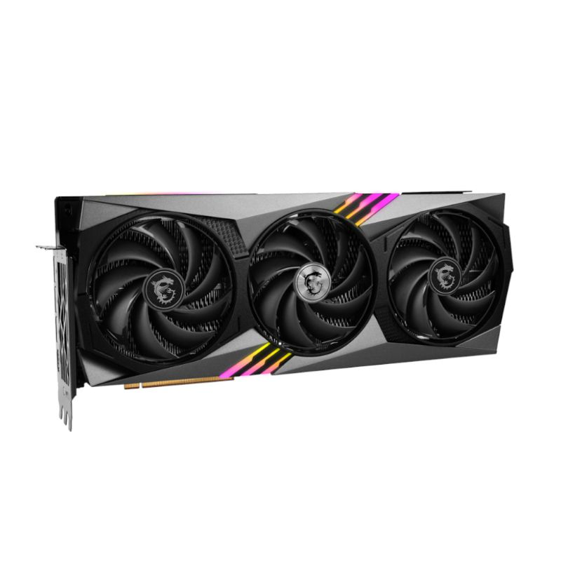
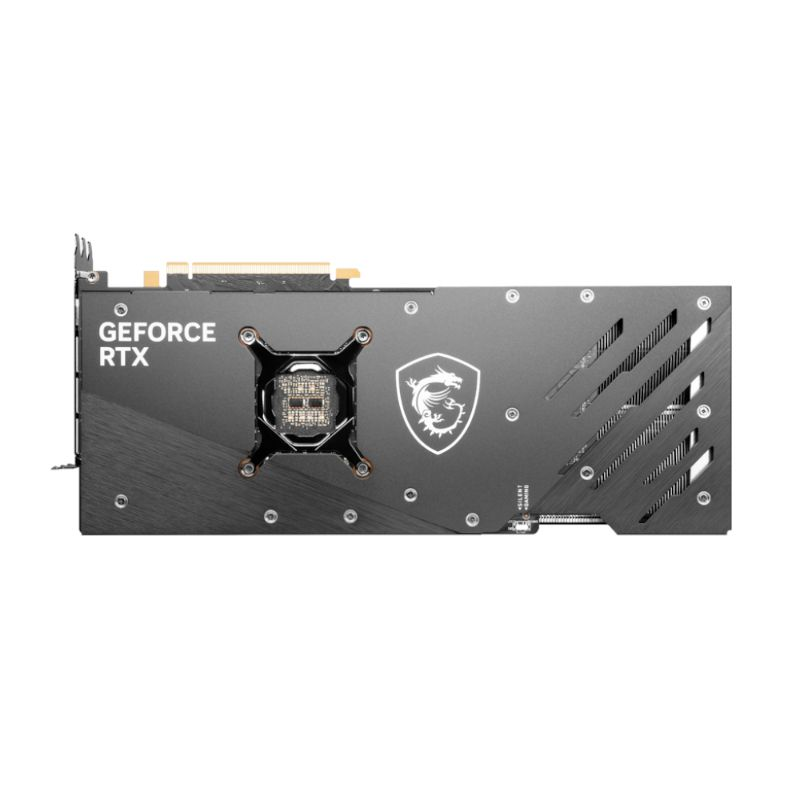
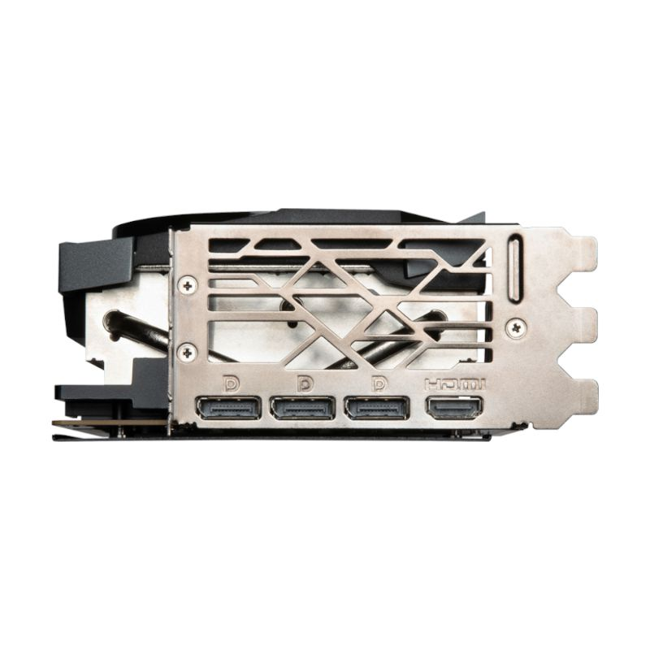
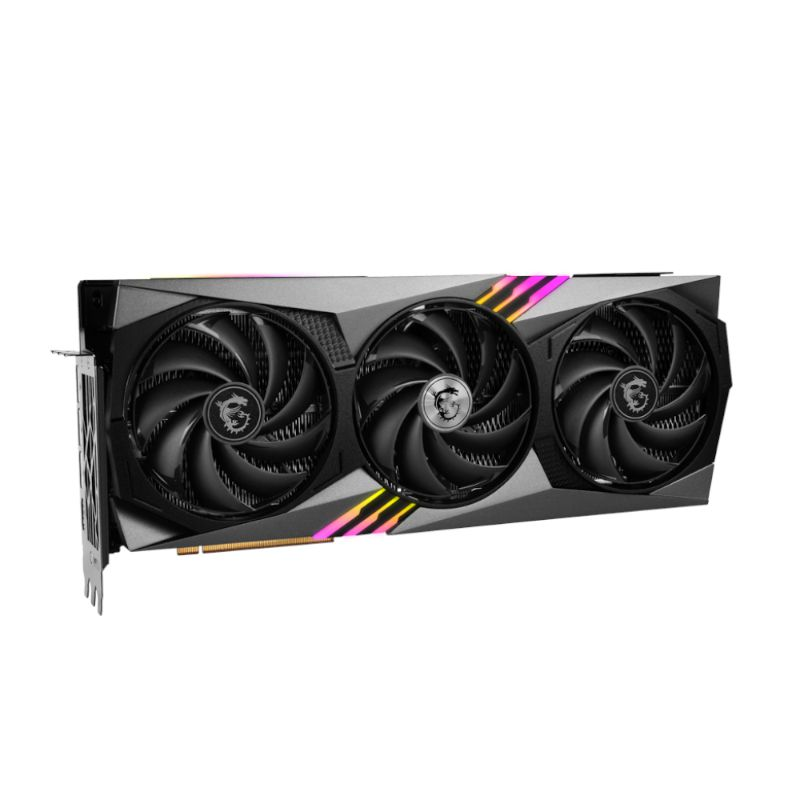
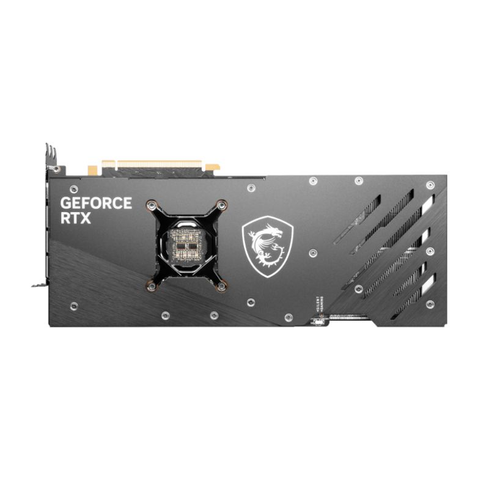
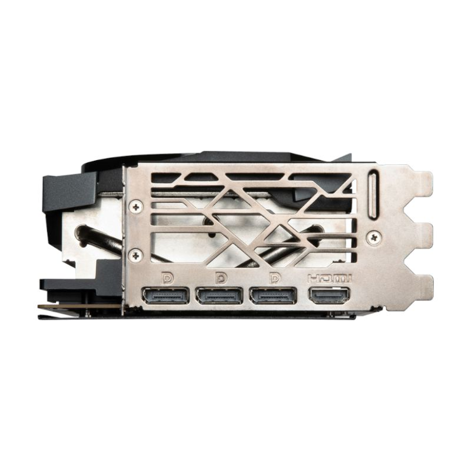

MSI GeForce RTX 4080 Gaming X TRIO 16GB Graphics Card
 





Price: R 36,690
Description: The NVIDIA® GeForce RTX™ 4080 delivers the ultra-performance and features that enthusiast gamers and creators demand. Bring your games and creative projects to life with ray tracing and AI-powered graphics. It’s powered by the ultra-efficient NVIDIA Ada Lovelace architecture and up to 16GB of superfast G6X memory.
The latest Nvidia processors are powered by GeForce RTX 40 Series, giving you the ultimate platform for gamers and creators alike. The RTX 4080 features new streaming multiprocessors with up to 2x performance and power efficiency, fourth-Gen Tensor Cores with up to 2x AI performance and third-gen RT Cores with up to 2x ray tracing performance.
The Ada architecture unleashes the full glory of ray tracing, which simulates how light behaves in the real world. With the power of RTX 40 Series and third-gen RT Cores, you can experience incredibly detailed virtual worlds like never before.
Nvidia Reflex and GeForce RTX 40 Series GPUs deliver the lowest latency and best responsiveness for the ultimate competitive advantage. Built to optimize and measure system latency, Reflex provides faster target acquisition, quicker reaction times, and the best aim precision for competitive games.
DLSS is a revolutionary breakthrough in AI-powered graphics that massively boosts performance. Powered by the new fourth-gen Tensor Cores and Optical Flow Accelerator on GeForce RTX 40 Series GPUs, DLSS 3 uses AI to create additional high-quality frames.
Features :
• Boost Clock - 2595 MHz (GAMING & SILENT Mode)
• Memory Speed - 22.4Gbps
• 16GB GDDR6X
• Three DisplayPort and one HDMI Port
• TRI FROZR 3 Thermal Design
• TORX Fan 5.0: Fan blades linked by ring arcs and a fan cowl work together to stabilize and maintain high-pressure airflow.
• Copper Baseplate: Heat from the GPU and memory modules is captured by a copper baseplate and then rapidly transferred to Core Pipes.
• Core Pipe: A section of square-shaped heat pipes make maximum contact over the GPU, then spread the heat to the heatsink.
• Airflow Control: Sections of different heatsink fins disrupt unwanted airflow harmonics and reduce noise.
• Dual BIOS gives you the choice to prioritize full performance in GAMING mode or low noise in SILENT mode.
Specifications :
• Graphics Processing Unit: NVIDIA® GeForce RTX™ 4080 16GB
• Interface: PCI Express® Gen 4
• Core Clocks: Extreme Performance: 2610 MHz (MSI Center), Boost: 2595 MHz (GAMING & SILENT Mode)
• CUDA® Cores: 9728 Units
• Memory Speed: 22.4Gbps
• Memory: 16GB GDDR6X
• Memory Bus: 256-bit
• Output: DisplayPort x 3 (v1.4a), HDMI™ x 1 (Supports 4K@120Hz HDR, 8K@60Hz HDR, and Variable Refresh Rate as specified in HDMI 2.1a)
• HDCP Support: Yes
• Power Consumption: 320W
• Power Connections: 16-pin x1
• Recommended PSU: 850W (Min.750W)
• DirectX Version Support: 12 Ultimate
• OpenGL Version Support: 4.6
• Maximum Displays: 4
• G-Sync® Technology: Yes
• Digital Maximum Resolution: 7680 x 4320
What's in the box
1 x MSI GeForce RTX 4080 Gaming X TRIO 16GB Graphics Card
Features :
• Boost Clock - 2595 MHz (GAMING & SILENT Mode)
• Memory Speed - 22.4Gbps
• 16GB GDDR6X
• Three DisplayPort and one HDMI Port
• TRI FROZR 3 Thermal Design
• TORX Fan 5.0: Fan blades linked by ring arcs and a fan cowl work together to stabilize and maintain high-pressure airflow.
• Copper Baseplate: Heat from the GPU and memory modules is captured by a copper baseplate and then rapidly transferred to Core Pipes.
• Core Pipe: A section of square-shaped heat pipes make maximum contact over the GPU, then spread the heat to the heatsink.
• Airflow Control: Sections of different heatsink fins disrupt unwanted airflow harmonics and reduce noise.
• Dual BIOS gives you the choice to prioritize full performance in GAMING mode or low noise in SILENT mode.
Specifications :
• Graphics Processing Unit: NVIDIA® GeForce RTX™ 4080 16GB
• Interface: PCI Express® Gen 4
• Core Clocks: Extreme Performance: 2610 MHz (MSI Center), Boost: 2595 MHz (GAMING & SILENT Mode)
• CUDA® Cores: 9728 Units
• Memory Speed: 22.4Gbps
• Memory: 16GB GDDR6X
• Memory Bus: 256-bit
• Output: DisplayPort x 3 (v1.4a), HDMI™ x 1 (Supports 4K@120Hz HDR, 8K@60Hz HDR, and Variable Refresh Rate as specified in HDMI 2.1a)
• HDCP Support: Yes
• Power Consumption: 320W
• Power Connections: 16-pin x1
• Recommended PSU: 850W (Min.750W)
• DirectX Version Support: 12 Ultimate
• OpenGL Version Support: 4.6
• Maximum Displays: 4
• G-Sync® Technology: Yes
• Digital Maximum Resolution: 7680 x 4320
What's in the box
1 x MSI GeForce RTX 4080 Gaming X TRIO 16GB Graphics Card
Show More
| Stock Availability | 66 items in stock |
| Product Barcode | 123456789 |
| Weight | 1876g |
| Product Dimensions | 33.7 x 14 x 6.7 cm |